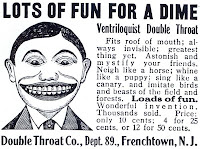
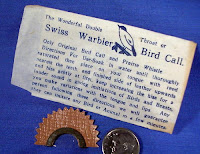

Swiss Bird Warbler
9/2/2010
{kind=link}

John Degel (Montana Santa) sent me the small old-time ad (right) for the "wonderful invention use for ventriloquist double throat" which I put up as a post a couple days ago. I think most youngsters, especially boys, were duped into answering this ad at one time or another.
What was delivered was the half moon shaped device with cellophane reed strip (see lower left), that when soaked in water (or saliva) and placed in the mo
{kind=link}

uth could be made into whistle-type sounds. I believe I saw Bill Boley use one for a bit on one of his videos...making a balloon dog "bark" or something similar.Years ago I attended a show Curt Hansen brought to a Denver area mall. His trained pig (live) barked like a dog throughout the show. Very entertaining and few in the audience suspected it was Curt (using the Bird Warbler) making the dog barks and sounds, and not the pig. It was a sound illusion, but not using the voice, so I never thought of it as ventriloquism, although maybe it's a distant relative. It was very entertaining.
Since publishing the post titled "Remember this", several readers have offered to locate some of these for me to give away. Thanks but no thanks. If anyone wants one, you can Google one for sale easily. Personally, I do not encourage them for the ventriloquist, especially so since my early experience was nearly identical to that which is described in the next paragraph.
* * * * *
From Philip Grecian: "The one I sent away for was advertised in the backs of comic books with the guy carrying the trunk past the little boy...who was making voices come out of it. There was a little booklet, too. The company that sold such things was "Honor House." Not much honor, though. I ordered quite a few disappointing things from them. The thing itself was useless. As I recall, it was a capsule-sized metal whistle thing you were supposed to put in your mouth. As you say, Clinton, it was useless for anything except making whistle sounds. Disappointed (and grateful not to have swallowed the dang thing), I put it in the sock drawer, where it rested for years and then, apparently, dissolved...or something."